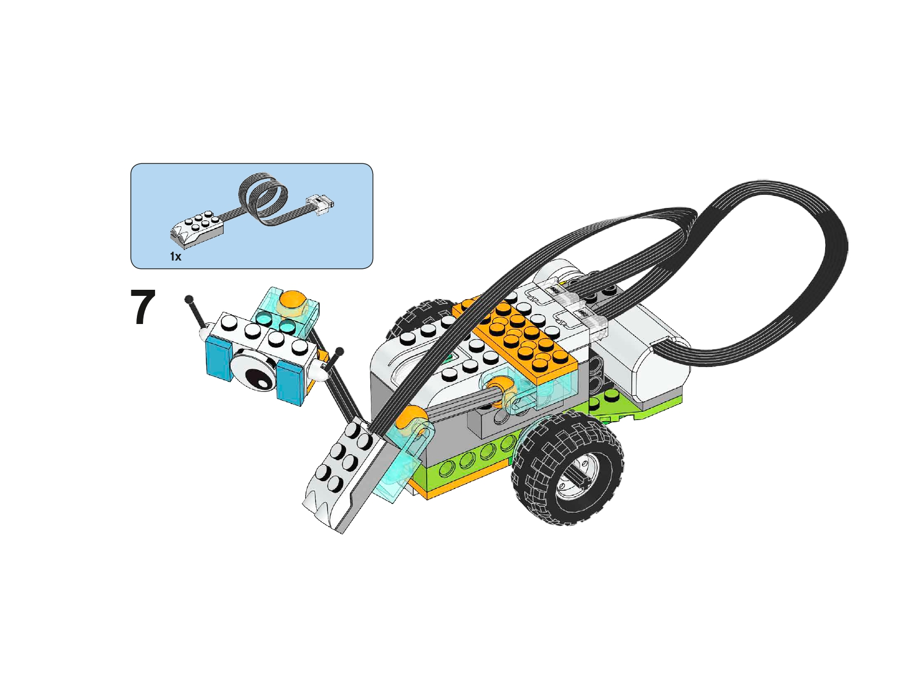
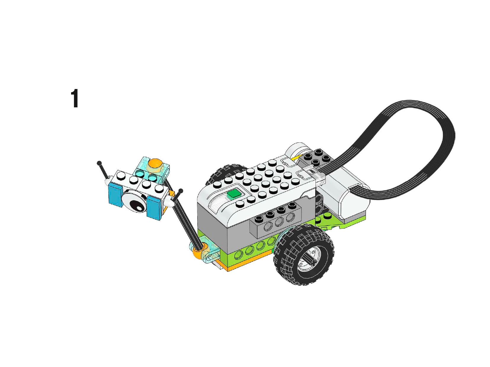
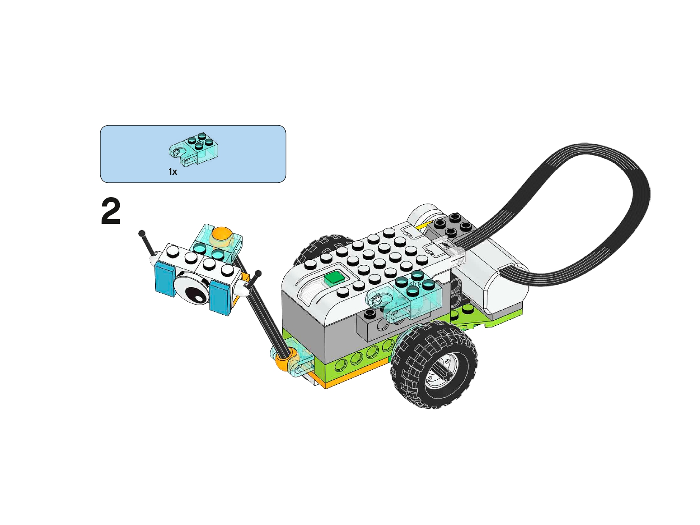
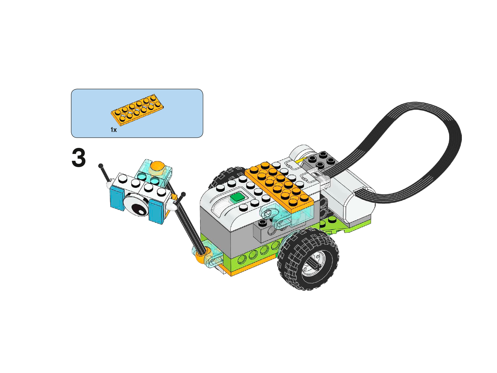
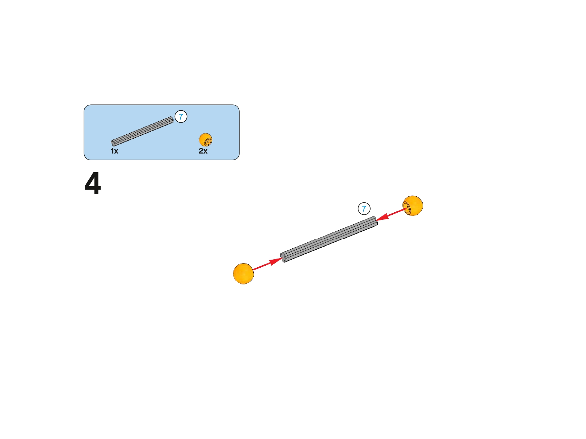
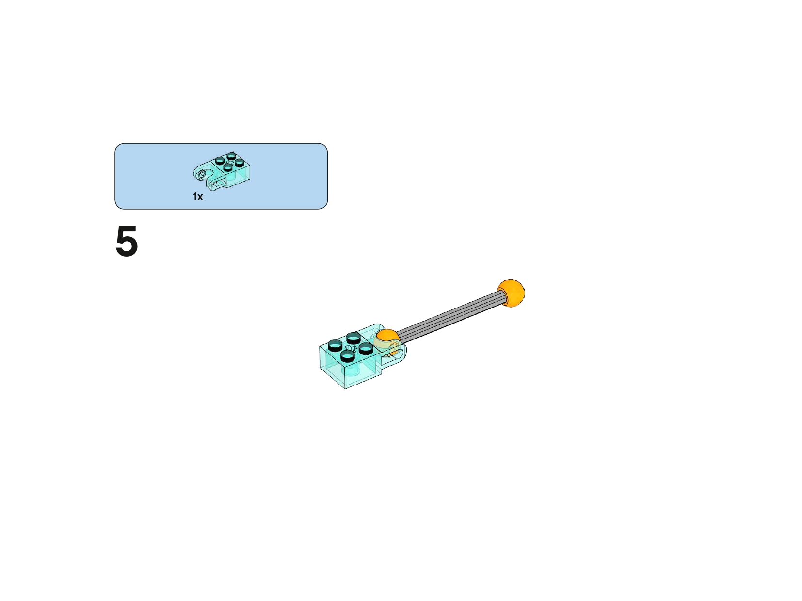
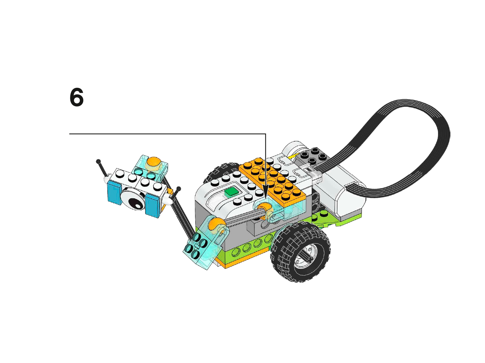

Planeta Zycurva · Uso del sensor de movimiento · Pensamiento matemático y computacional
Has llegado al Planeta Zycurva, una superficie inestable llena de grietas profundas y abismos energéticos.
Tu explorador, RoverBot, solo puede avanzar y retroceder en línea recta, pero un paso en falso puede hacerlo caer al vacío.
Tu misión es convertir el sensor de movimiento de RoverBot en su sistema de seguridad:
un aliado que le avise cuándo detenerse antes del borde.
1. Preparación en Zycurva
Antes de enviar a RoverBot hacia el borde, prepara el escenario de forma segura:
Marca una línea de inicio para RoverBot.
Delimita el abismo con cinta o cartulina oscura.
Asegura que RoverBot solo pueda avanzar y retroceder en línea recta.
Conecta el hub y comprueba motor y sensor de movimiento.
Abre el entorno de programación por bloques.

2. Construcción del Sensor – Parte 1
Construye el brazo con sensor que ayudará a RoverBot a detectar el borde.
Sigue las imágenes en orden.

Paso 1

Paso 2

Paso 3
Asegúrense de que las piezas queden firmes: este será el brazo de vigilancia de RoverBot.
2. Construcción del Sensor – Parte 2
Completa la estructura del sensor hasta el paso 7. El sensor debe quedar orientado hacia el frente.

Paso 4

Paso 5

Paso 6
Paso 7
Imágenes basadas en instrucciones LEGO® Education WeDo 2.0. Uso educativo.
3. Fase Explorar
Con RoverBot listo, tu equipo reflexiona:
Si un robot no ve como nosotros, ¿cómo puede saber que está cerca de un lugar peligroso?
¿Qué pasaría si RoverBot no se detiene a tiempo antes del abismo?
¿Por qué los científicos necesitan medir con precisión para tomar decisiones seguras?
El sensor es un "ojo científico" y el programa será un
algoritmo: una lista ordenada de instrucciones claras.
💾 Escriban sus respuestas en el documento que se encuentra en la carpeta de la misión en Drive.
4. Fase Crear: Algoritmo de Seguridad
Antes de programar con bloques, vamos a usar algo muy importante llamado
pseudocódigo.
🤔 ¿Qué es un pseudocódigo?
Es una forma de explicar paso a paso lo que queremos que haga algo,
usando palabras sencillas, como si se lo contáramos a un amigo.
No es un programa real, es un plan de acciones.
📌 Ejemplo de pseudocódigo:
AL DESPERTAR:
LEVANTARSE DE LA CAMA
IR AL BAÑO
LAVARSE LOS DIENTES
DESAYUNAR
PREPARAR LA MOCHILA
IR AL COLEGIO
➜ Son instrucciones claras, en orden, usando palabras normales.
🧠 Ahora piensa:
¿qué pasos debería seguir tu RoverBot para no caer al abismo?
✍️ Escriban con sus propias palabras (pseudocódigo) lo que quieren que haga
RoverBot, antes de pasar a la programación por bloques.
5. Registrar y Analizar: ¿Es un programa seguro?
Ahora deben comprobar con datos si el programa protege a RoverBot:
Midan la distancia desde la línea de inicio hasta el abismo (ej. 40 cm).
Ejecuten el programa varias veces.
Registren en la tabla dónde se detuvo RoverBot.
Ensayo
Distancia al borde (cm)
Dónde se detuvo (cm)
¿Se detuvo a tiempo?
1
2
3
Analicen si RoverBot siempre se detiene a una distancia segura.
Si no, ajusten el programa y registren sus conclusiones en el documento en Drive.
6. Fase Compartir: Informe de la Misión
Graben un vídeo donde se vea a RoverBot acercándose al abismo y deteniéndose a tiempo.
En el vídeo, expliquen:
Cómo usa RoverBot el sensor de movimiento.
Qué instrucciones del algoritmo lo protegen.
Qué observaron en la tabla de datos.
Suban el vídeo y el documento de la misión a la carpeta en Drive.
✅ Cuando terminen, hagan clic en "Completar Misión" para ganar la insignia
"Guardianes del Abismo de Zycurva".